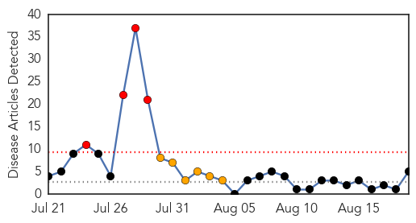
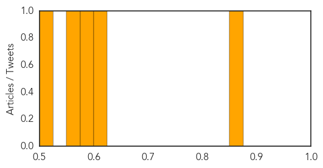

Hepatitis
30-Day Web Trend
4 alerts, 6 warnings

30-Day Twitter Trend
1 alerts, 0 warnings
Article Locations

Article Confidences
Top Articles:
Top Tweets:
-
No tweets found for Aug 19, 2015
Pertussis
30-Day Web Trend
0 alerts, 0 warnings

30-Day Twitter Trend
1 alerts, 0 warnings

Article Locations

Article Confidences

Top Articles:
-
No articles found for Aug 19, 2015
Top Tweets:
-
No tweets found for Aug 19, 2015